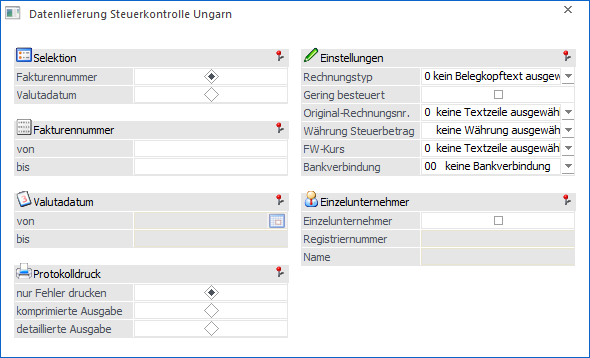
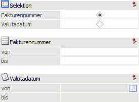
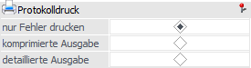
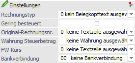
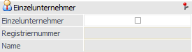
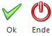

Mit Hilfe des Menüpunkts…
1 WinLine FAKT
1 Auswertungen
1 Datenlieferung Steuerkontrolle Ungarn
… kann der Nachweis über die ausgestellten Fakturen eines bestimmten Zeitraums für die Ungarische Steuerbehörde / Finanzamt erstellt werden.

Folgende Selektionen und Einstellungen stehen zur Verfügung:
Selektion

Ø Selektion
An dieser Stelle kann definiert werden, ob die Selekton (siehe nachfolgende Felder) anhand der Fakturanummer oder des Valutadatum vorgenommen werden soll.
Ø Fakturanummer
Wurde als Selektionskriterium "Fakturanummer" gewählt, so kann an dieser Stelle eine Selektion auf die Fakturanummer vollzogen werden.
Ø Valutadatum
Wurde als Selektionskriterium "Valutadatum" gewählt, so kann an dieser Stelle eine Selektion auf das in der Faktura hinterlegte Valutadatum erfolgen.
Protokolldruck

Ø Protokolldruck
Bei Anwahl des Buttons "Ok" bzw. der Taste F5 wird immer eine XML-Datei mit allen auszugebenen Fakturen (in einem fest vorgegebenen Aufbau) erstellt. Zusätzlich wird ein Protokoll in den Spooler bzw. auf den Drucker ausgegeben. An dieser Stelle kann der Inhalt des Protokolldrucks definiert werden.
ü nur Fehler drucken
Auf dem
Protokoll werden nur die Kopfdaten von fehlerhaften Fakturen ausgegeben.
ü komprimierte Ausgabe
Auf dem
Protokoll werden die Kopfdaten aller ausgegebenen Fakturen angezeigt.
ü detaillierte Ausgabe
Auf dem
Protokoll werden die Kopf- und die Artikeldaten aller ausgegebenen Fakturen
angezeigt.
Einstellungen

Ø Rechnungstyp
Jeder Rechnungssatz in der XML-Ausgabedatei hat ein obligatorisches XML-Tag für den "Rechnungstyp" (szlatipus_tipus). Da für diese Informationen keine spezielle Variable in der Belegerfassung vorhanden ist, kann hierfür eines der 4 Belegkopftext-Felder genutzt werden. Mit Hilfe der Auswahlliste kann an dieser Stelle angegeben werden, welcher Belegkopftext die Information beinhaltet.
Hinweis
Für den Rechnungstyp werden jeweils die Belegkopfauswahlen 1 bis 6 berücksichtigt. Wurde für eine Rechnung kein Typ angegeben, so wird bei der Erstellung der XML-Datei eine Fehlermeldung (ungültiger Rechnungstyp) im Protokoll ausgegeben.
Ø Gering besteuert
Durch Aktivierung dieser Option wird in der XML-Datei vermerkt (Tag "Kisadozo"), dass es sich um eine Firma (Unternehmer) handelt, welche(r) gering besteuert wird.
Ø Original-Rechnungsnr.
Die originale Rechnungsnummer, welche z.B. bei beglaubigten Belegkopien benötigt wird, muss in eine der 10 Belegtextzeilen (Register "Text" der Belegerfassung) hinterlegt werden .An dieser Stelle wird nun ausgewählt, in welchem Text sich die Nummer befindet.
Ø Währung Steuerbetrag
An dieser Stelle wird die Währung für die XML-Datei angegeben, d.h. auf diese Währung werden die Steuerbeträge umgerechnet. Normalerweise sollte in diesem Feld die Währung "HUF" gesetzt werden. Wenn die Landeswährung1 des jeweiligen Unternehmens nicht HUF ist, wird der für die Umrechnung des Betrags anzuwendende Fremdwährungskurs im Feld "FW-Kurs" (siehe unten) ausgewählt.
Ø FW-Kurs
Der Umrechnungskurs auf die Währung "HUF" muss in einem der 10 Belegtextzeilen (Register "Text" der Belegerfassung) hinterlegt werden. Mit Hilfe dieses Kurses werden die Belegbeträge dann auf HUF umgerechnet.
Ø Bankverbindungen
An dieser Stelle muss die Bankverbindung der Rechnungsausstellers hinteregt werden.
Einzelunternehmer

Ø Einzelunternehmer
Handelt es sich um bei der Firma um einen Einzelunternhemer, so muss diese Option aktiviert werden. Hierdurch werden die nachfolgenden Felder für eine Eingabe freigegeben.
Ø Registriernummer
Wurde die Option "Einzelunternehmer" aktiviert, so kann an dieser Stelle die Registrierungsnummer hinterlegt werden.
Ø Name
Wurde die Option "Einzelunternehmer" aktiviert, so kann an dieser Stelle der Name hinterlegt werden.
Buttons

Ø Ok
Druch Anwahl des Buttons "Ok" bzw. der Taste F5 wird die XML-Datei erzeugt und das Protokoll in den Spooler bzw. auf den Drucker abgestellt. Sollten Fehler vorhanden sein, so wird bei der Erstellung ein entsprechender Hinweis ausgegeben und keine XML-Datei erstellt (die Datei ist aber kontrollierbar).
Hinweis - Inhalt der XML-Datei
Folgende Elemente werden in die XML-Datei übergeben bzw. aufbereitet:
ü Nur Artikel- und Gutschriftszeilen sind in der Datei enthalten (d.h. keine Textzeilen in der Rechnung).
ü Der Liefertermin wird aus der Belegzeile übernommen.
ü Die Daten des Rechnungsausstellers werden überwiegend dem Mandatenstamm entnommen.
ü Die Bankdaten des Rechnungsempfängers werden aus dem Personenkontenstamm (Standardbankverbindung) genommen.
ü Erstellt ein "Steuer- / Finanzvertreter" die Rechnungen, so muss dieser in der XML-Datei angegeben werden. Hierfür ist das Belegkopffeld "Zusatzadresse" zu nutzen.
ü Die KN8-Nummer der Artikel stamm aus dem Artikelstamm.
ü Wenn eine Bruttopreisliste in der Rechnung verwendet wird, so werden die entsprechenden Nettowertwerte (Stückpreis und Gesamtbetrag) automatisch berechnet.
ü Der "Gesamtrabatt" in der Artikelzeile wird aus allen Rabattspalten berechnet und ergibt somit den Gesamtrabatt.
ü Zur Berechnung des Zahlungsdatums wird das Valutadatum oder, wenn nicht eingegeben, das Buchungsdatum verwendet.
Ø Ende
Durch Anwahl des Buttons "Ende" bzw. der Taste F5 wird das Fenster geschlossen und keine Ausgabe durchgeführt.